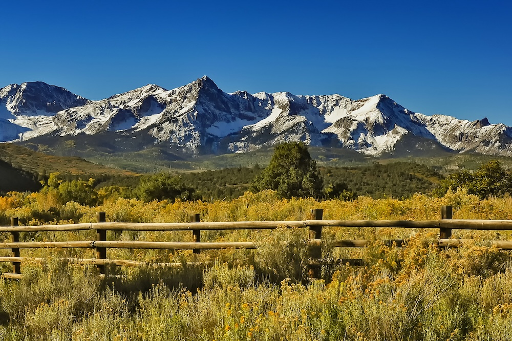
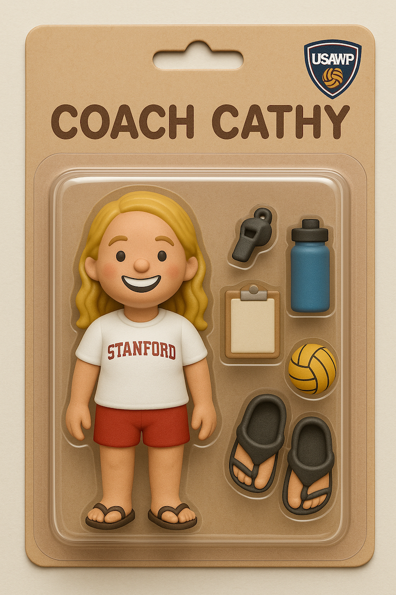

Image Alt Text Generator Results
AI prompts used:
- You are a helpful alt-text generator assisting visually impaired users. Generate a clear and concise caption (15-30 words) that highlights the most important subject and action. Focus only on essential details, avoiding unnecessary background elements. Use simple, everyday language and avoid overly descriptive or poetic words.
- What's in this image? Be brief, it's for image alt description on a social network. Don't write in the first person.
- You write alt text for any image pasted in by the user. Alt text is always presented on a single line so it can be used easily in Markdown images. All text on the image (for screenshots etc) must be exactly included. A short note describing the nature of the image itself should go first.
Image: san-juan-mountains.jpg

Alt Text 1:
"Snow-capped mountain range against clear blue sky, with golden autumn grassland and shrubs in foreground, separated by a wooden fence."
Alt Text 2:
A stunning mountain landscape with snow-capped peaks under a clear blue sky. In the foreground, a wooden fence runs along golden-yellow autumn vegetation and sagebrush, with pine trees and foothills leading up to the dramatic mountain range in the background.
Alt Text 3:
A landscape photograph of snow-capped mountains against a clear blue sky, with golden-yellow autumn vegetation in the foreground and a wooden fence running across the scene. The mountains appear to be part of a mountain range, possibly in the western United States, with evergreen trees visible in the middle ground.
Image: HoodRiver.jpg

Alt Text 1:
"Rural countryside with full rainbow arching over green fields, fenced pastures, and distant mountains. Small house visible among evergreen trees."
Alt Text 2:
A stunning rural landscape with a full rainbow arching across the sky. In the foreground is a fenced pasture with tall grass, and in the middle ground is a small house or barn surrounded by evergreen forest. Mountains rise in the background under a partly cloudy blue sky. The scene captures a peaceful countryside setting with beautiful natural lighting.
Alt Text 3:
A scenic rural landscape featuring a complete rainbow arching across the sky over rolling meadows and pastures. In the foreground are grassy fields with some fenced areas, while evergreen forests line the background. Mountains can be seen in the distance under a partly cloudy blue sky. A small house or barn structure is visible in the middle distance of the property.
Image: Firewood.jpeg

Alt Text 1:
A large pile of split firewood stacked under a covered structure with wooden support columns, likely for seasoning before winter use.
Alt Text 2:
A large pile of split firewood stacked under a covered area with wooden support posts. The firewood appears to be mixed hardwood, freshly split and piled for storage or seasoning.
Alt Text 3:
A large pile of split firewood stacked under a covered area with wooden pillars, likely a storage shed or woodshed. The wood appears to be freshly split with various sized pieces arranged in a disorganized heap, ready for seasoning or use as fuel.
Image: GasPump.jpeg

Alt Text 1:
An Exxon gas pump display showing a purchase of $81.13 for 17.640 gallons of fuel.
Alt Text 2:
The image shows an Exxon gas pump display with a total purchase price of $81.13 for 17.640 gallons of fuel. The blue pump has the Exxon logo at the top in red letters against a white background.
Alt Text 3:
[Display of an Exxon gas pump showing a purchase of $81.13 for 17.640 gallons of fuel]
Image: Rossi2.png

Alt Text 1:
An IndyCar race car with number 20, featuring Java House and Spiegel sponsorships, parked in a garage with Firestone tires.
Alt Text 2:
An IndyCar race car with Java House and Chevrolet sponsorship in a garage. The car features a distinctive black, yellow, light blue and white livery with the number 20, Firestone tires, and multiple sponsor logos including Liquid Science and Hurco visible.
Alt Text 3:
An IndyCar race car in a garage, featuring the number 20, with Java House as the main sponsor. The car has a sleek design with yellow, black, and light blue color scheme, Firestone tires, and other sponsor logos including Liquid Science, Hurco, and Chevrolet.
Image: Slack.png

Alt Text 1:
"Slack logo featuring a colorful hashtag-like symbol with blue, green, red, and yellow elements next to the word 'slack' in black text."
Alt Text 2:
The image shows the Slack logo, featuring a multicolored hashtag-like symbol (with blue, green, red, and yellow components) next to the word "slack" in bold black text. This is the official brand logo for the workplace communication platform.
Alt Text 3:
Logo: The Slack logo featuring the distinctive colorful hashtag-like symbol in blue, green, red and yellow next to the word "slack" in bold black text.
Image: Coach.png

Alt Text 1:
"Toy figurine packaging labeled 'Coach Cathy' with a cartoon character in Stanford shirt and red shorts, accompanied by volleyball coaching accessories including whistle, water bottle, and ball."
Alt Text 2:
A toy figurine package labeled "COACH CATHY" featuring a cartoon-style volleyball coach character wearing a Stanford shirt and red shorts. The package includes accessories like a whistle, water bottle, clipboard, volleyball, and flip-flops. The USAWP (USA Water Polo) logo appears in the corner of the packaging.
Alt Text 3:
[Toy packaging for volleyball coach figure. The package labeled "COACH CATHY" contains a cartoon figurine wearing a Stanford t-shirt and red shorts with flip-flops, accompanied by accessories including a water bottle, whistle, clipboard, volleyball, and an extra pair of sandals. The USAWP logo appears in the upper right corner.]